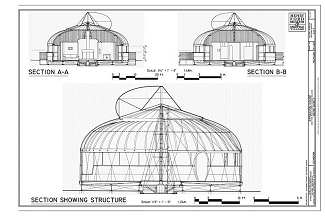
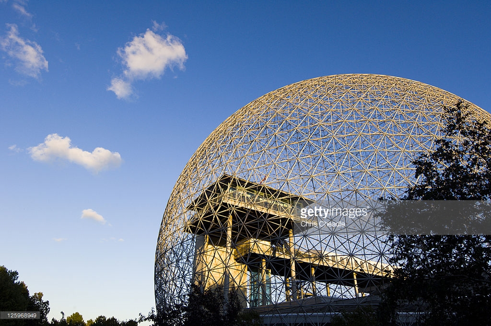

Fuller's first revolutionary design was for the Dymaxion car; a car that was streamlined like an airplane, could hold up to 12 people, could be driven up to 90 miles per hour, and got 30 miles to a gallon of gas. This was a care like no other.
Coined by store advertisers and ultimately trademarked by Fuller, the term 'Dymaxion' combined the words 'dynamic', 'maximum' and 'ion', and became synonymous with Fuller's utopian living ideas.
First shown at the Chicago World's Fair, a fatal accident during its demonstration kept the Dymaxion car from being mass-produced.
Another Fuller concept was the
|  |
The round building reduced heat loss and building costs while maintaining incredible strength capable of withstanding earthquakes and tornadoes. Created around 1940 and used by British forces during WWII, the Dymaxion Deployment Unit, or DDU was a circular building made of corrugated metal, self-cooled and divided in pie shaped interior spaces. They were easy to ship to the British forces and easy to assemble.
Other Fuller concepts were invented but never realized. His ideas for modular bathrooms that could be assembled anywhere were precursors to today's modular housing.
Meant to make life easier and more affordable for the masses, household starter packages, another idea of his, would give a family all the basic furnishings they would need to start housekeeping.
One of Fuller's inventions did make it past the prototype stage: the geodesic dome, a spherical structure made from triangles that can withstand snow, rain, wind, earthquakes, and even tornadoes. After WW II ended, Fuller wanted to develop affordable, efficient buildings that could be built from mass-produced components. This structure could span larger areas while being lighter and stronger than conventional construction.
|  |
The geodesic dome is based on a